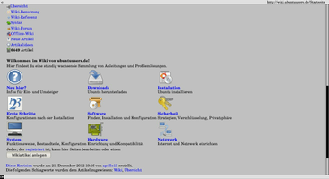

links2
Dieser Artikel wurde für die folgenden Ubuntu-Versionen getestet:
Ubuntu 14.04 Trusty Tahr
Zum Verständnis dieses Artikels sind folgende Seiten hilfreich:
Links2 ist der Nachfolger von Links  und ein sehr komfortabler und leistungsfähiger Browser für die Konsole. Das Programm kann im Text- und Grafikmodus gestartet werden.
und ein sehr komfortabler und leistungsfähiger Browser für die Konsole. Das Programm kann im Text- und Grafikmodus gestartet werden.
Ist nun einmal der XServer ausgefallen, will man sich natürlich auch im Internet auf die Suche nach dem Fehler begeben. Hier hilft Links2 mit seinen Features und lässt kaum etwas von einer gewohnten Arbeitsumgebung mit herkömmlichen Web-Browsern vermissen. Verwandte Artikel zu Konsolen-Browsern sind unter w3m und Lynx zu finden.
|  | |
| Textmodus | Grafikmodus |
Installation¶
Links2 wird über folgende Pakete installiert [1]:
links2 (universe)
gpm (universe, optional - Falls im Text- und Grafikmodus auch mit der Maus gesteuert werden soll)
 mit apturl
mit apturl
Paketliste zum Kopieren:
sudo apt-get install links2 gpm
sudo aptitude install links2 gpm
Bedienung¶
Das Starten des Browsers im Textmodus erfolgt in einem Terminal [2]; dabei hängt man die zu öffnende URL gleich hinten an.
links2 http://www.ubuntuusers.de
Die Navigation erfolgt mit den Pfeiltasten ↑ , ↓ , die Auswahl wird anschließend mit ⏎ geöffnet.
Grafiksystem¶
Das Starten des Browsers im Grafikmodus erfolgt beispielsweise in einem Terminal [2]. Mit der Option -g sucht Links2 nach einem installierten Grafiksystem. Auch hier kann gleich wieder die URL übergeben werden.
links2 -g http://www.ubuntuusers.de
Treiber¶
Unter Linux können unter anderem ein laufender XServer, das SVGAlib Grafiksystem oder das Framebuffer Grafiksystem (DirectFB) genutzt werden.
Beispiel für einen gezielten Aufruf des SVGAlib-Grafiksystems:
links2 -g -driver svgalib
oder des Framebuffer-Grafiksystems:
links2 -g -driver directfb
oder für das X-Windowsystem:
links2 -g -driver x
Welche Grafiktreiber zur Verfügung stehen, erfährt man durch den Aufruf eines Treibers, den es nicht gibt, beispielsweise:
links2 -g -driver help
Modus¶
Um den Grafikmodus im Terminal auf die Auflösung 1024x768 mit 16 Bit Farbtiefe zu ändern, ist folgender Eintrag hinzuzufügen. Alternativ kann beim Systemstart der Kernelparameter (vga=) siehe hier, für eine Standardauflösung in der menu.lst mitgegeben werden.
links2 -g -mode 1024x768x16M http://www.ubuntuusers.de
Weitere Beispiel-Parameter für Auflösung und Farbtiefe sind 320x200x16, 640x480x256, 800x600x64K, 1024x768x16M, 1024x768x16M32 und 1280x1024x32K. Je nach Treiberwahl ist zu beachten, dass die Syntax des -mode-Parameters abweicht. Nähere Infos können aus der folgenden Tabelle entnommen werden.
| Mode | |
| Parameter | Beschreibung |
-g | starten im Grafikmodus |
-driver <driver name> | Angabe des Treibers mit dem der Grafikmodus gestartet wird (x, svgalib, fb, directfb, pmshell, atheos) |
-mode <graphics mode> | Angabe des Grafikmodus für SVGALib im Format SPALTE x ZEILE x FARBE, für framebuffer als Anzahl der Randpixel LINKS,OBEN,RECHTS,UNTEN Beispiel: -mode 10 setzt alle Randpixel auf 10 oder -mode 10,20 setzt LINKS und RECHTS auf 10 und OBEN und UNTEN auf 20 , für X im Format BREITE x HÖHE |
-codepage <codepage> | setzen der Zeichensatzcodierung mit iso-8859-2, windows-1250 |
-language <language> | setzen der Benutzersprache z.B. german |
-version | anzeigen der aktuellen Versionsinformationen |
-help | anzeigen der Hilfe für links2 (Manpages) |
-display-optimize <0>/<1>/<2> | Display Optimierung für CRT (0), LCD (1), LCD BGR (2) |
-menu-font-size <size> | angeben der Schriftgröße im Menü |
-background-color 0xRRGGBB | setzen der Hintergrundfarbe für das Menü (Angaben in HEX-Code RRGGBB) |
-foreground-color 0xRRGGBB | setzen der Vordergrundfarbe für das Menü (Angaben in HEX-Code RRGGBB) |
-download-dir <path> | angeben des Verzeichnisses für den Datei-Download |
-image-cache-size <bytes> | angeben der Bilder-Cache-Größe in Bytes (default: 1048576) |
-memory-cache-size <bytes> | angeben der Cache-Größe in Bytes (default: 1048576) |
-enable-javascript <0>/<1> | Javaskript aktivieren (1), deaktivieren (0) |
-http-proxy <host:port> | angeben von Host-Namen und Portnummer des HTTP-Proxy (default: blank) |
-ftp-proxy <host:port> | angeben von Host-Namen und Portnummer des FTP-Proxy (default: blank) |
-dump <url> | schreibt zu Text formatierte Webseiten in den Ausgabe-Kanal (stdout) |
Weitere Optionen können in den Manpages zu Links2 nachgelesen werden.
Tastenkürzel¶
Hier sind einige wichtige Tastenkürzel aufgeführt, die sowohl im Text- als auch im Grafikmodus aktiv sind. Noch ein Hinweis zur Tastenbeschreibung: Im Programm Links2 selbst wird die Funktion von Strg als ^ dargestellt.
| Tastenkürzel | |||
| Taste(n) | Aktion | Taste(n) | Aktion |
| Esc | Menü Anzeige | Q | Browser beenden |
| Bild ↑ | Bild rauf | Bild ↓ | Bild runter |
| → | Link folgen | ← | Link zurück |
| Z | Zurück (nur Grafikmodus) | Strg + R | Seite neu laden |
| Strg + S | Stop | G | gehe zu Adresse |
| ⇧ + G | gehe zu Adresse (von aktueller URL) | ⇧ + 7 | Suchen |
| ⇧ + ß | Suche rückwärts | N | nächster Suchbegriff |
| ⇧ + N | vorheriger Suchbegriff | ⇧ + 0 | Dokument Info |
| Alt Gr + < | Kopf Info | Alt Gr + ß | Dokument Quelle |
| D | Speichern | Strg + ⇧ + W | URL oder Suchtext komplettieren |
Konfiguration¶
Sprache¶
Für Links2 gibt es in der aktuellen Version Übersetzungen in 32 Sprachen, zwischen denen im Menü der grafischen Oberfläche unter "Einstellungen -> Sprache" gewählt werden kann. Damit die Einstellungen erhalten bleiben, müssen sie gespeichert werden: "Einstellungen -> Optionen speichern".
Die Wahl der Sprache ist auch über einen Parameter steuerbar, ein beispielhafter Aufruf mit grafischer Oberfläche und deutschsprachiger Menüführung lautet:
links2 -g -language german
Browser kalibrieren¶
Für Links2 gibt es eine Kalibrierungsfunktion zur Einstellung von Helligkeit, Kontrast, Gammawert und RGB Farbeinstellungen für CRT und LCD Monitore. Zur Einstellung wird einfach die calibration.html geöffnet, in der nach den Anweisungen die Einstellungen vorgenommen werden können.
Dies kann über das Menü des Browsers mit "Hilfe -> Kalibration" oder über folgenden Befehl erfolgen (der Pfad ist ggf. anzupassen):
links2 /usr/share/doc/links2/calibration/doc/links_cal/calibration.html
Konfigurationsdateien¶
Die Konfigurationsdateien von links2 werden im Homeverzeichnis unter ~/.links2 abgespeichert.
html.cfg (HTML Informationen, HTTP-Kopf Informationen)
links.cfg (alle im Programm vorgenommenen Konfigurationen für Text und Grafikmodus)
links.his (Verlauf)
bookmarks.html (gespeicherte Lesezeichen)
Fähigkeiten¶
Web Features¶
Links2 beherrscht folgende Web-Fähigkeiten.
Tabellen
Frames
Lesezeichen Verwaltung
HTML 4.0
HTTP 1.0, 1.2
CSS (eingeschränkt, noch keine Unterstützung im HTML 4.0)
SSL
Bis Version 2.1pre28 enthielt Links2 auch JavaScript Unterstützung (Wikipedia)
Bilder (GIF, animierte GIF's, JPEG, PNG, XBM, TIFF im Grafikmodus)
herunterladen von Dateien im Hintergrund
Unterstützte Plattformen¶
Die Unterstützung in den aufgelisteten Plattformen funktioniert im Text- und Grafikmodus.
AIX
AtheOS (AtheOS graphics environment)
BeOS
Cygwin under Windows
FreeBSD
FreeMint
HPUX
Irix
Linux (SVGAlib, framebuffer)
MacOS X
NetBSD
OpenBSD
OS/2 (Pmshell)
Solaris
SunOS
Tru64
 Übersicht
Übersicht
- Erstellt mit Inyoka
-
 2004 – 2017 ubuntuusers.de • Einige Rechte vorbehalten
2004 – 2017 ubuntuusers.de • Einige Rechte vorbehalten
Lizenz • Kontakt • Datenschutz • Impressum • Serverstatus -
Serverhousing gespendet von